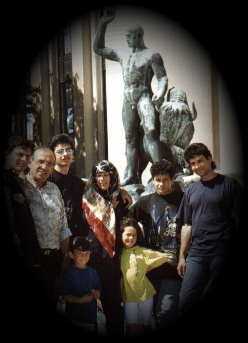
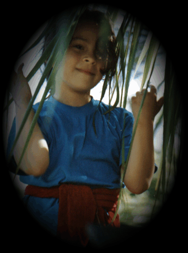

|
|
![[ mars ]](./hanis-page_files/space_b.gif)

![[ star ]](./hanis-page_files/space_f.gif)
Welcome to my web page
Hey thanks for visiting my cool web-page what you see is just the beginning, a dramatic improvement will be made to this site in the near future. However the following will give a cool introduction about me and about my wellbeing as an alien on earth. Enjoy it!!
The story started when I was born on the 5th of January 1972. My mum was giving me birth at 4:00 am. I had to cry as it was so early an noisy. eight months later I felt strength in my legs and noticed that everyone stand on their legs. A strong desire was instantly developed in me to walk like them, so I gathered my strength and stood up very fast. Lack of balance made me fell over but I stood up again and felt that I am losing balance again so I start running. I ran and everyone in the house start running after me. I had two reasons for not to stop running, the first one was not to have any of them to catch me and the second one was to avoid falling over.
After a year I saw a strange person was almost as little as me looking at me while my mum was feeding me. My mum said "this boy is your brother you can play with him". Playing with my brother was not of so much fun because he didn't know much of games to play, so I start inventing my own games and taught them to him. All of a sudden playing became more interesting.
My mum tummy became big, she said that she is going to buy us another baby from the market. WE were very happy. My mum bought the baby but he was boring, useless and produce shit at all times. I never liked him. My older brother start going to school and later on I start going to school as well. I was better at school and everybody liked me there. In my second year in the school the teacher gave me a coupon of 50 Ryals to be paid as a charity for Palestinians. I went home and asked my father about it he said Palestinians are like you Hani they don't have a country. I said we are living in a country he said yes but it is not ours. I asked why, he said bad things happens to good people all the times for no reason. He then asked me to be good at school to get our country back. I became one of the best students while the rest of my brothers were the worst. My mum kept having more children and we were growing up very fast. I was the first to go to the university because of luck and my good marks. I wanted to study electronic engineering but discrimination allowed business studies. I took my chances and graduated before my brothers. My bachelor degree was in Business Administration but that didn't stop me of learning electronics. I then worked for an Advertising agency for a year and decided to read for an MBA in General management. I had my MBA degree on July 1997 at the University of Exeter. My brothers were motivated and joined the Uni later on. While they were reading for the master I was very confused of what next. Instead of working I joined a DBA program in Marketing so I am becoming a Doctor in Marketing.
During all these years I learned many crafts. At school I taught myself painting (just to empress my cousin, she was a beautiful girl). During my undergraduate studies I learned how to compose musical pieces on my synthesizer and my GEM workstation. I also learned how to paint with soft pastel colors. Believe it or not all my paintings were more than excellent. I painted members of the family and some portraits of my friends. I also painted some surrealistic paintings and sold some of them at a very expensive price. During my postgraduate studies I learned Photography and was appointed as a president of the Photographic society at the University of Exeter. I mastered almost everything about the Darkroom. The cool thing is that I had to learn everything on my own and then teach others. It was a dream that we develop colour photographs in the darkroom, only at my time it became possible. I am so happy that I achieved many great things in my life but I didn't manage to get a country for myself. I was alien and I am still alien wherever I go.
What I want for my future, I want to have a very good job, get married to a wonderful wife and probably get a country.
I am very openminded person and have hundreds of friends of all sort of nationalities. The cool thing is that I don't have a nationality myself, wherever I go I am an alien. I was born in Saudi Arabia registered in Syria as a Palestinian refugee of the year 1948 and currently living in the UK as a Student but still my passport says I am stateless. So I am an illegal Alien everywhere.
Aliens are aliens, no matter how you look at it. They should have Visas wherever they go.
all my family members are aliens as well

Look at this little alien
her name is Lulu. She is my favorite sister

Not all aliens are cute sometimes they are as dangerous
as this Coki, my little brother
[ Next page]
My dear visitor feel free to sign my geust book below.Comments are more than welcome, so write whatever you want :)
[ view guestbook ] [ sign guestbook ]
| [ KeyTrax...Audio Generator][ Angelfire...Free Web Pages][ WhoWhere...People Finder] |
If you feel like you want to be a friend of a cool alien
E-mail me on wonderfulhani@hotmail.com